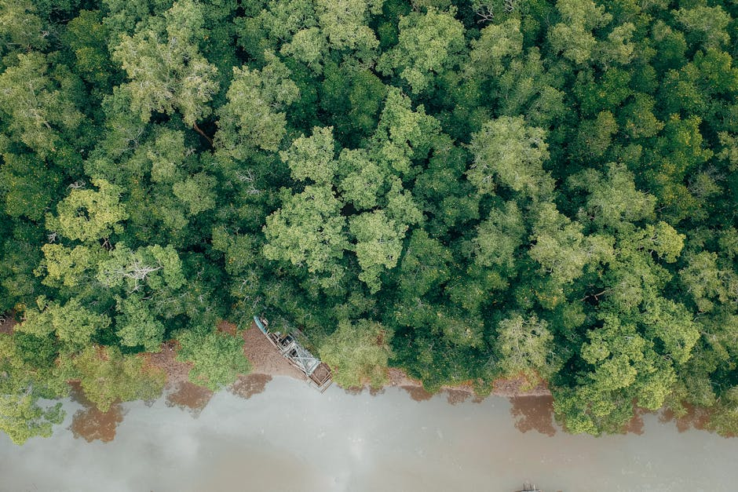

Monitoring Deforestation, predicting Landuse and Landcover changes and planning forest restoration in Uganda through AI-powered Remote Sensing

This project provides Uganda’s first openly accessible AI-ready satellite imagery dataset designed to predict land-use and land-cover change. It was created to address persistent deforestation and the lack of reliable, context-specific data needed to detect, forecast, and manage ecosystem degradation. Through an open-source replication kit including annotated Sentinel-2 and Hansen datasets, protocols, and inventory data, this products enables local innovators, forest agencies, and policymakers to build AI tools for monitoring forests, planning restoration, and supporting NDC and SDG15 actions. Its goal is to improve early detection of land-cover change, strengthen climate-smart decision-making, and empower local institutions with high-quality geospatial data.
Data characteristics
1. Landus Landcover Datasets (2015 -2023),
2. ArcGIS Pro Project, ArcGIS DEEPLearning Model for Tree Species.
The dataset provides georeferenced, annotated Sentinel-2 and Hansen imagery with clear landuse and landcover classes, groundtruth data, and standardized protocols. Users can train AI models for landuse and landcover classification, detect deforestation, validate predictions, and support restoration planning. Its high resolution, temporal coverage, and open accessibility enable accurate, scalable environmental monitoring.
Model characteristics
The AI application analyzes historical satellite imagery gereated landuse and landcover maps (2015-2024) and predicts future landuse and land-cover change, offering simple inputs including Sentinel-2 and Hansen datasets of tree cover and outputs such as classified maps and simulations for 2025 and 2030. It identifies deforestation, farmland expansion, and urban growth patterns, supporting evidence-based land management. While highly accurate (ANN: 85.2% OA), limitations include data inconsistencies, sampling bias, and reliance on remote-sensing quality. Ethical use requires adherence to responsible-AI assessment, transparency, and proper citation. The model runs on standard GIS/AI software (QGIS, google colab, Jupyter-notebook) with no special hardware. All derived datasets and protocols are open for reuse under an open license; users must credit the original project to strengthen community knowledge and track downstream impact.
How to use
One can immediately use this AI system to classify landuse and landcover types, detect deforestation, and generate LULC predictions for 2025–2030. Users can replicate the full workflow from preprocessing imagery, training ANN models, and simulating future change scenarios to support forest monitoring, restoration planning, district land-use decision-making, or environmental reporting. Researchers can extend the work by integrating socio-economic variables, testing hybrid models, adding additional years of imagery, or adapting the model to new districts. Replication requires awareness of limitations such as sampling imbalance, image quality differences, and potential classification bias; an ethical-AI review is recommended for all downstream use. Costs remain low because the tools (QGIS, GEE, SEPAL) and datasets are free; only compute for model training (standard PCs) and technical time are required. All datasets, protocols, and documentation form an open public-good resource, with opportunities for collaboration through Makerere AI Lab and NFA.
Use cases
About
Powered by / Provided by: Makerere University in cooperation with the National Forestry Authority (NFA) of Uganda
Catalyzed by: Lacuna-Fund / Meridian (Climate-call) & FAIR Forward - AI for All, GIZ
Financed by: BMZ
Authors: Alondra Arellano, Jonas Nothnagel
Contact: Makerere AI Lab - Dr. Joyce Nabende (joyce.nabende@mak.ac.ug), National Forestry Authority (NFA): https://nfa.go.ug/